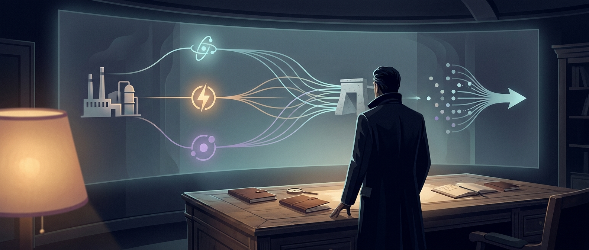

Aion Brief
Sintesi del giorno

Le storie più forti di oggi hanno un filo comune: contano meno come episodi isolati e di più come segnali di un equilibrio che si sta spostando. Il baricentro passa dall'effetto novità alla capacità di integrare tecnologie, asset industriali e distribuzione in flussi operativi concreti. Letti insieme, Nuove ondate di caldo spingono gli incendi verso Bordeaux, Cursor punta sull'India con un abbonamento locale da 649 rupie e Antares raccoglie 470 milioni di dollari per piccoli reattori militari raccontano un mercato che premia esecuzione, presidio dei colli di bottiglia e velocità di messa a terra più dei semplici annunci.
Segnale dominanteGeopolitica
Tema principaleRiposizionamento competitivo
Cosa osservareCapacità di trasformare annuncio in adozione reale